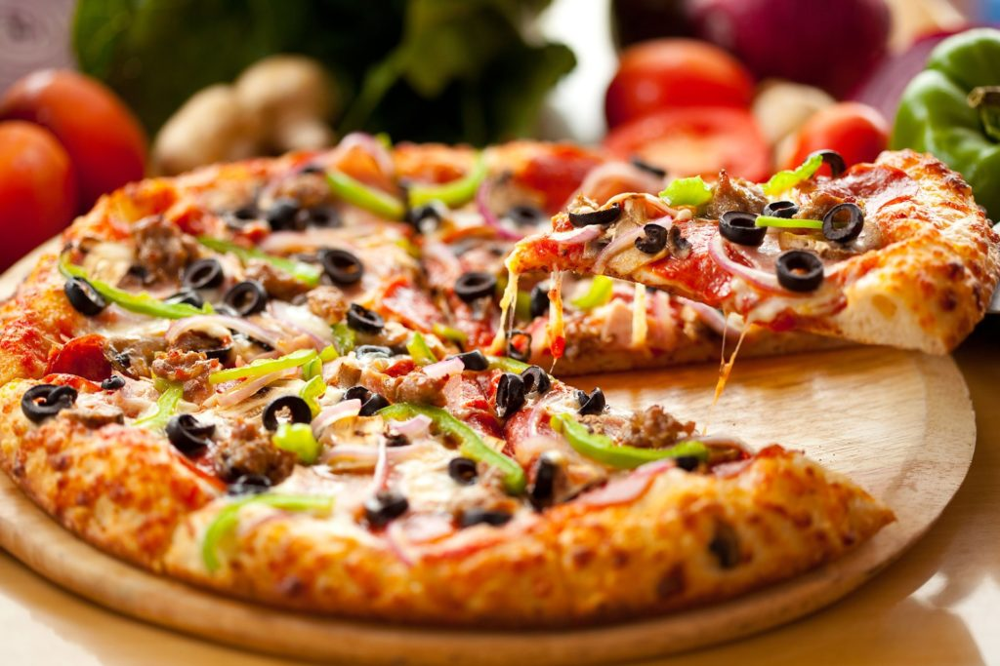

ratatouille


ingredientes
2 abobrinhas
2 berinjelas
3 tomates
1 pimentão verde
1 pimentão amarelo
1 pimentão vermelho
azeite a gosto
alecrim a gosto
manjericão a gosto
alho a gosto
sal a gosto
louro a gosto
molho de tomate para cobrir o fundo da forma
Comprar ingredientes
modo de preparo
1- Corte os vegetais em rodelas finas sem as sementes.
2- Cubra o fundo de uma forma com o molho de tomate.
3- Monte tudo intercalando com os vegetais.
4- Amasse o alho e espalhe por cima acrescentando o sal e o alecrim a gosto.
5 - Regue com um pouco de azeite e cubra com papel-manteiga ou alumínio.
6 - Leve ao forno por 40 minutos a uma temperatura de 180° C a 200° C.
torta de limao

receita de torta de limao
ingredientes
Massa
200 g de biscoito de maisena
150 g de margarina
1 lata de leite condensado (395 g)
1 caixa de creme de leite (200 g)
suco de 4 limões
3 ou 4 claras de ovo
3 colheres (sopa) de açúcar
raspas de 2 limões
modo de preparo
1- Triture o biscoito de maisena em um liquidificador ou processador.
2- Junte a margarina e bata mais um pouco.
3-Despeje a massa em uma forma de fundo removível (27 cm de diâmetro).
4- Com as mãos, espalhe os biscoitos triturados no fundo e nas laterais da forma, cobrindo toda área de maneira uniforme.
5- Leve ao forno médio (180° C), preaquecido, por aproximadamente 10 minutos.
6- Bata todos os ingredientes no liquidificador (exceto as raspas de limão) até obter um creme liso e firme.
7- Recheie a massa já assada e leve à geladeira por 30 minutos.
8- Bata as claras em neve e acrescente o açúcar
9- Misture até obter um ponto de suspiro e leve ao forno até dourar.
10- Desenforme a torta (sem retirar o fundo falso), despeje a cobertura e acrescente as raspas de limão.
waffle

receita waffle
ingredientes
Pré-aqueça a máquina de waffle e bata no liquidificador o leite, a manteiga e o ovo até virar uma mistura homogênea.
Em seguida coloque os ingredientes secos: a farinha, o açúcar, o fermento e o sal. Bata novamente até obter uma massa lisinha.
modo de preparo
1- Sirva seus waffles de liquidificador quentes ou frios! Tradicionalmente eles são servidos com creme belga, mas existem muitas outras opções gostosas: fruta, leite condensado, geleia, mel, requeijão, calda de chocolate, manteiga, sorvete de baunilha... experimente e delicie-se!
bife acebolado
receita bife acebolado
ingredientes
200 g de carne bovina
2 cebolas grandes
2 sachês de sazón vermelho
1 copo americano de vinagre
Azeite
Sal a gosto
modo de preparo
1- Coloque a carne em uma vasilha
2- Tempere a carne com um sachê de sazón vermelho com uma colher (sopa) de azeite e misture
3- Pique a cebola em rodelas e coloque em uma vasilha.
4- Acrescente o vinagre na cebola e o outro sachê de sazón vermelho e misture.
5- Depois pegue a carne já temperada e frite, cada lado da carne tem que ficar fritando por um minuto e meio.
6- Depois de ter fritado a carne com a gardura que restou da carne, coloque a cebola onde você fritou a carne, e deixe a cebola fritar por dois minutos.
pizza
receita pizza
ingredientes
1 kg de farinha de trigo
1 kg de farinha de trigo
30 g de fermento biológico
3 xícaras de água morna
3/4 xícaras de óleo
1 colher (chá) de sal
1 colher (chá) de açúcar
1 colher (sopa) de pinga
modo de preparo
1- Misture o fermento, o sal e o açúcar em um pouco de água morna, até que o fermento esteja completamente dissolvido.
2 -Em seguida, adicione metade da medida de farinha de trigo, o óleo e mexa até criar uma consistência pastosa.
3 -Acrescente o restante da farinha de trigo, a pinga, a água morna e misture bem.
4- Assim que a massa desgrudar das mãos, deixe crescer por 30 minutos.
5 -Abra os discos, fure a massa com um garfo e pincele o molho.
6 -Leve ao forno médio (180° C), preaquecido, por 15 minutos
batata frita

receita de batata frita
ingredientes
kg de batatas Asterix (ou batatas bem secas)
Água
Óleo para fritar
modo de preparo
1-Descasque as batatas e corte no sentido do comprimento em forma de palitos (cerca de 1 cm de espessura)
2- Disponha em uma panela, cubra com água e leve ao fogo até levantar fervura. Deixe cozinhar por 5 minutos, escorra e passe em água corrente até esfriar.
3 -Espalhe a batata em assadeira forrada com plástico, sem sobrepor ou grudar, e leve ao freezer por 24 horas
4 -Frite diretamente do freezer em óleo quente abundante até dourar e deixe escorrer sobre papel absorvente